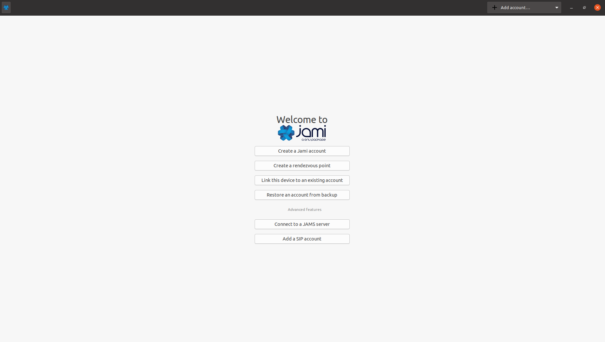
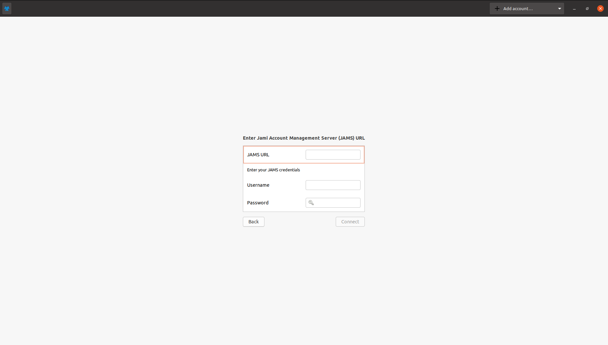
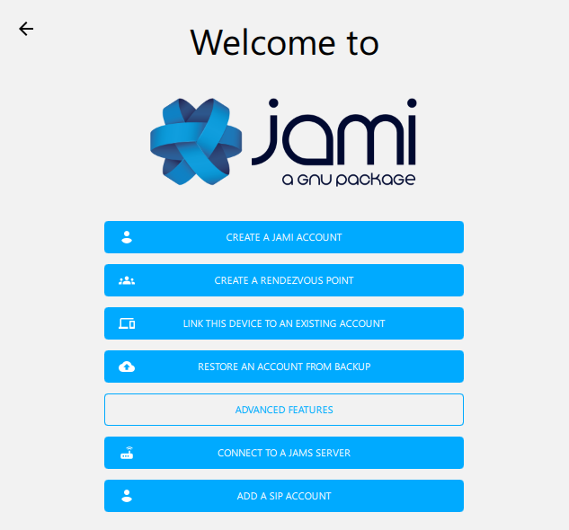
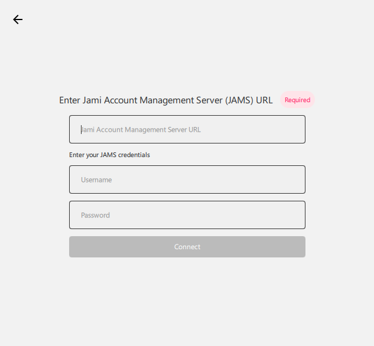
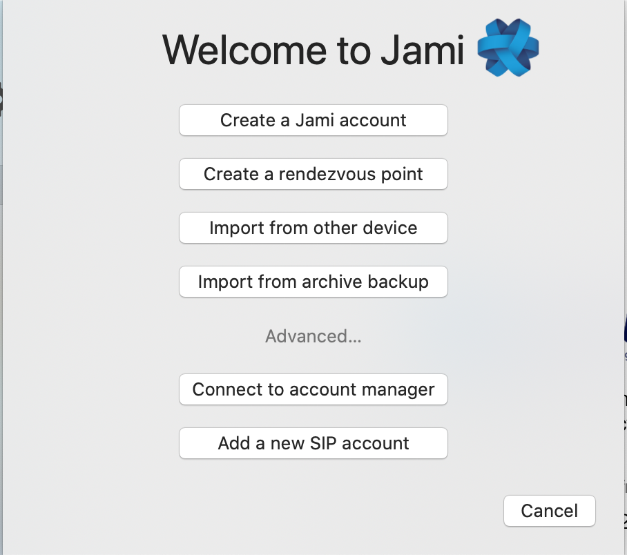
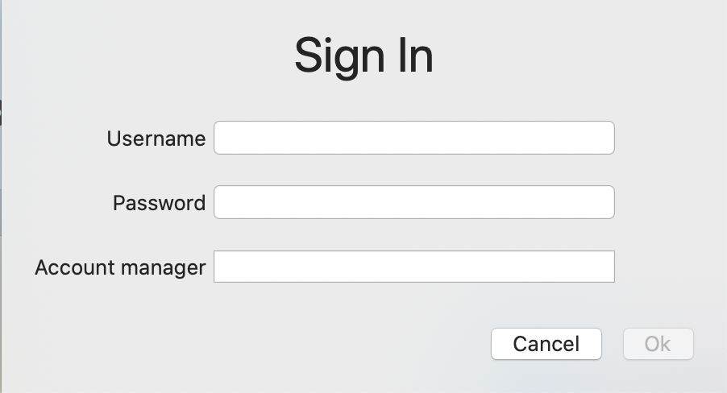
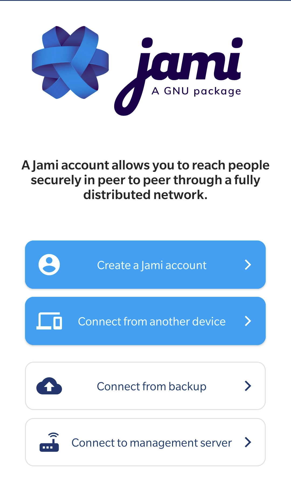
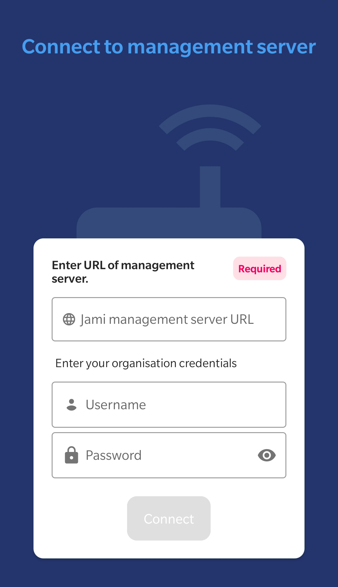
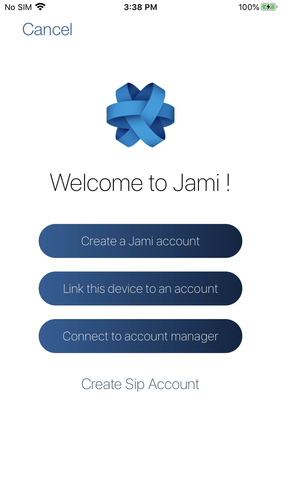
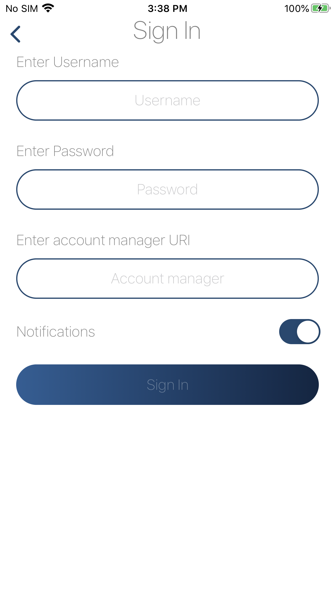

Client Guide
Depending on your operating system, we have included the tutorial on how to connect to the management server from the Windows, MacOS, Android and iOS clients.
For the purposes of this tutorial, we assume that
- The server and the device trying to connect are either
- On the same network
- The server is publicly accessible to the outside world
- You have a valid username/password pair to connect to the server
Connect from a Linux device
Open Jami, go to the login page. Click on "Advanced":

Select the option "Connect to a JAMS server" which will lead you to the following screen:

The Jami Account Management Server URL in this case would be the DNS address of your server and the username and password which correspond to your account. If you have configured the server with an LDAP/AD backend, it would be your LDAP/AD username and password.
Connect from a Windows device
Open Jami, go to the login page. Click on "Advanced":

Select the option "Connect to a JAMS server" which will lead you to the following screen:

The Jami Account Management Server URL in this case would be the DNS address of your server and the username and password which correspond to your account. If you have configured the server with an LDAP/AD backend, it would be your LDAP/AD username and password.
Connect from a MacOS device
Open Jami, go to the login page. Click on "Advanced":

Select the option "Connect to account manager" which will lead you to the following screen:

The Jami Account Management Server URL in this case would be the DNS address of your server and the username and password which correspond to your account. If you have configured the server with an LDAP/AD backend, it would be your LDAP/AD username and password.
Connect from an Android device
Open Jami, go to the login page.

Select the option "Connect to management server" which will lead you to the following screen:

The server in this case would be the DNS address of your server and the username and password which correspond to your account. If you have configured the server with an LDAP/AD backend, it would be your LDAP/AD username and password.
Connect from an iOS device
Open Jami, go to the login page.

Select the option "Connect to account manager" which will lead you to the following screen:

The server in this case would be the DNS address of your server and the username and password which correspond to your account. If you have configured the server with an LDAP/AD backend, it would be your LDAP/AD username and password.